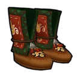

Mocassins de Caçador
Calçados leves · Tier 12 · Nível 37
São em trabalhos simples que o talento do artesão mais fica evidente.
Atributos
Defesa
355
Evasão
7%
Economia
Valor
2.900.000
Tempo de fabricação
22h 30min
XP do comerciante
220.000
Trabalhadores: Alfaiate 30, Mestre 26, Ferreiro 23
Receita


Marcos do projeto
6
Tempo de fabricação -25%
14
-25 Tecido
26
Valor +25%
40
-81 Couro
60
Chance de qualidade +1